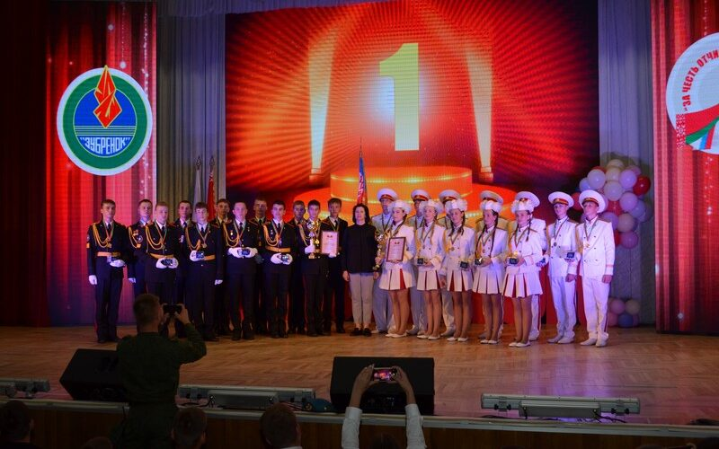

Апошнія школьныя навіны

Ганаровы Пост Памяці
29 Кастрычніка 2024
У горадзе Магілёве адзначаецца 40-годдзе з дня заснавання Ганаровага паста памяці загінуўшых за Айчыну...
Чытаць далей

"За Гонар Айчыны»
10 Верасня 2024
У НДЦ "Зубраня" адбылося адкрыццё грамадзянска-патрыятычнай кадэцкай змены навучэнцаў...
Чытаць далейМузей крыміналістыкі
26 Кастрычніка 2024
Экспозиция музея размещена в двух залах и посвящена борьбе с преступностью с 1917 года по настоящее время...
Чытаць далей
У адзінстве сіла!
17 Верасня 2024
У рамках святкавання Дня народнага адзінства навучэнцы 21-ай школы прынялі ўдзел у велапрабегу "У адзінстве сіла!”...
Чытаць далей
У шэрагах БДСМ
16 сентября 2024
Кадэты 21-ай школы прынялі ўдзел у абласным урачыстым уступленні ў шэрагі БДСМ, прысвечанаму...
Чытаць далей